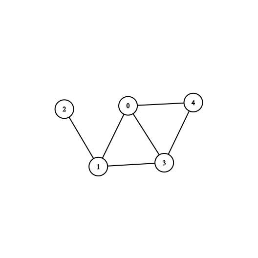
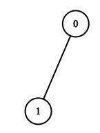
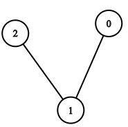
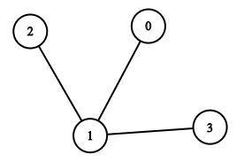
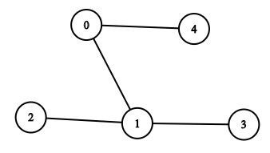

BFS (Breadth First Search) is one of the ways that we can do graph traversal on a graph.
What do we mean by a Graph Traversal?
Graph Traversal is a way of visiting all the nodes of a graph starting from a given node. Here the starting node is called a “source node”.
Note: as all trees are graphs we can also do a BFS on the tree. But the catch is, graphs can contain many cycles where trees don't contain any, So in a graph, we can revisit the same node but it's not possible to do so in the tree. So we have to keep a visited list of nodes to prevent visiting the same node twice.
- Let’s see an example:
Consider we have an undirected graph with 5 nodes numbered 0, 1, 2, 3, 4, having 6 edges as
(0 – 1), (0 – 3), (0 – 4), (1 – 2), (1 – 3), (3 – 4)
And Say the source node is 1
1. Now we initially have only one node as the beginner i.e. node 1. So we have visited node 1 (which is of depth 0). We add node 1 to the visited graph.
2. We traverse one neighbor of the node 1 to our traversal and mark them visited, So we have to traverse say node 0 (now it is of depth 1, as it’s visited after visiting a node of depth 0). So the visited graph is.

3. Looking at the visited graph nodes we see that now the unvisited nodes of node 0 is node 3 and node 4, whereas the unvisited nodes of node 1 is node 2 and node 3. Now here we have to give priority and choose the neighbors of the initial node (i.e. node 1, which is of depth 0), we do so because we are traversing depth by depth, i.e. completing one depth level and then going to the next.
If we choose a neighbor of depth 0 (here node 1) we will get a node of depth 1.
If we choose a neighbor of depth 1(here node 0) we will get a node of depth 2, clearly failing to complete the traversal of depth 1.
So, we choose a neighbor of node 1 (depth 0) to traverse next, i.e. we choose node 2 (depth 1).
4. Now if we check the neighbors of node 1 (depth 0) then we find that only 1 remaining node is present which is node 3, so we traverse to node 3 and add it to our visited graph,

here node 3 will have a depth of 1 (why?, as it is traversed from a node of depth 0).
5. Finally, we see that there are no remaining neighbors of node 1(depth 0), now we can choose the neighbors of nodes with depth 1, here node 2, node 0 and node 3 have depth of 1. We can choose any one of the nodes and then go on adding its neighbors. Here let me choose node 2 and see it’s neighbors, we don’t get any, so we add nothing.
6. Now we have node 0 and node 3 in depth 1, (node 2 is eliminated as it has given all the neighbors that can be given, here 0). Now we choose a node, say node 0 and choose its neighbor. We see that the only neighbor of node 0 (depth 1) that is unvisited is node 4. So we visit node 4 and add it to the visited graph, and the depth of node 4 is made to depth 2 (why?, as node 4 is visited from a node which has depth 1).
NOTE:
● We only go to the unvisited nodes, If we go to the visited node we can be stuck in a cycle and the algorithm will go into an infinite recursion.

7. We can see that all the nodes of the original are visited, so we discontinue the process, (note if we continue also no new nodes can be added).
Here we have visited all the nodes with BFS starting from node 1. In the order of :
● Node 1 (depth 0)
● Node 0 (depth 1)
● Node 2 (depth 1)
● Node 3 (depth 1)
● Node 4 (depth 2)
This order of traversal 1 → 0 → 2 → 3 → 4 is called as BFS TRAVERSAL of the given graph
NOTE:
1) The final visited order shown above can be different, i.e. the relative order of nodes having the same depth can be different but the relative order of depth will not change i.e. you can’t visit a node of depth 2 first then go to a node of depth 1.
2) The mapping of the nodes and to the depth is always the same, ex. Here in the BFS we see that node 4 has a depth of 2, so any BFS on the same graph having the same source node will have node 4 in depth 2.
3) If we see the final visited graph, we see that this is a tree, now this tree which we get is a subset of the original graph having the same number of nodes but having less number of edges (note: the number of edges are minimum to keep the graph connected). And these types of tree that are a subgraph of the original graph, having the same number of vertices as the original graph, and having minimum possible number of edges to keep the subgraph connected is called a “Spanning Tree”. So, we can say that the graph-traversal(both BFS and DFS) of a graph gives us a spanning tree.
The order that we have to maintain is first visit all the nodes of one depth (say D), then visit all the nodes of the depth (say D + 1, obviously!) . But if we have nodes of depth D then we can know the nodes at level D + 1, by just visiting the unvisited neighbor of the nodes at depth D.
(Why? As we are going depth by depth we first visit all the nodes of depth 0 then depth 1 … then depth D, so all the nodes which are of depth ≤ D, will be in the visited graph).
Now to do it the best Data Structure will be where we can process the nodes of depth D then add all the nodes of the depth D + 1 by processing the initial depth D nodes. Then in the future we will get nodes of depth D+ 2 by processing the nodes at depth D + 1. So, in that Data Structure we need the nodes that we process and insert first should be processed first to get further nodes.i.e. We need a data structure that follows FIFO (First In First Out) ordering. So, we can use a Queue.
Now, apart from a Queue we want a way to store the visited nodes of the BFS so that we don’t visit that node more than once. We can do it easily by keeping a boolean array, where we will keep the property that a node of number i is visited or not in Arr[i], if Arr[i] = 1 then node i is visited, else if Arr[i] = 0 the node i is not visited.
So we would need a
a. Queue
b. Boolean Array
Note: if your graph does not contain integer nodes but nodes are of T data types, then you can use a hashmap of type T -> boolean.
A Pseudo Code :
Note: Here we know unvisited / visited by the help of boolean array (or Hashmap)
Time Complexity : the time complexity is O ( V + E )
where V is the number of vertexes and E is the number of edges.
It is highly recommended to solve below problems, they are handpicked by Programmers Army:
1.
https://www.hackerearth.com/practice/algorithms/
graphs/breadth-first-search/practice-problems/algorithm/monk-and-the-islands/
2. https://www.spoj.com/problems/PPATH/
This article is contributed by Mohit Swain
So that’s it for this article we will be coming up with our next article on further topics of Graph Theory very soon till then keep learning, keep coding, keep reading and keep improving !!
Happy Coding
By Programmers Army 😊